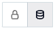

SAP HANA OCF Connector: Install and Configure¶
Alation Cloud Service Applies to Alation Cloud Service instances of Alation
Customer Managed Applies to customer-managed instances of Alation
Network Configuration¶
Alation On-Prem¶
Open outbound TCP port 8889 to the SAP HANA server.
For SAP HANA Cloud, ensure that Alation is allowed to connect to the SAP HANA Cloud database. You may need to whitelist the Alation instance IP address on SAP HANA Cloud.
Alation Cloud Service¶
For on-prem deployments of SAP HANA, the connection from Alation Cloud Service instances requires Alation Agent. For SAP HANA Cloud, whitelist the Alation Cloud Service instance IP address on SAP HANA Cloud.
SSL Certificate¶
If using SSL connection, obtain the SSL certificate file for your SAP HANA server. You will need to place it on the Alation server when configuring the data source in Alation.
Service Account¶
Request assistance from your SAP HANA administrator to create a service account for Alation on the SAP HANA database. The service account will be used for extraction from system views. Example query:
CREATE USER <service_account_name> PASSWORD <password>;
Permissions for Metadata Extraction¶
The service account requires permissions to read system views. Example query:
GRANT CATALOG READ TO <service_account_name>;
The following system views will be queried by the Alation service account during metadata extraction:
VIEWS
TABLES
M_TABLES
SYNONYMS
INDEX_COLUMNS
TABLE_COLUMNS
INDEXES
INDEX_COLUMNS
FUNCTIONS
FUNCTION_PARAMETERS
AFL_FUNCTIONS
AFL_FUNCTION_PARAMETERS
PROCEDURES
PROCEDURE_PARAMETERS
REFERENTIAL_CONSTRAINTS
OBJECT_DEPENDENCIES
Permissions for Sampling and Profiling¶
The service account requires the SELECT permission on all schemas and tables that you want to allow sampling and profiling for.
Example query for schemas:
GRANT SELECT ON SCHEMA <schema> TO <service_account_name>;Example query for tables:
GRANT SELECT ON <schema.table> TO <service_account_name>;
Permissions for Query Log Ingestion¶
Query history logs for SAP HANA can be read from the Expensive Statements Trace. The service account requires the SELECT permission on the table or view created for QLI.
For more details, see Query Log Ingestion below.
JDBC URI¶
Format¶
sap://<host_IP_address>:<port>/
Example¶
sap://10.13.25.22:8889/
Configuration in Alation¶
STEP 1: Install the Connector¶
Alation On-Premise¶
Important
Installation of OCF connectors requires Alation Connector Manager to be installed as a prerequisite.
To install an OCF connector:
If this has not been done on your instance, install the Alation Connector Manager: Install Alation Connector Manager.
Ensure that the OCF connector Zip file is available on your local machine.
Install the connector on the Connectors Dashboard page using the steps in Manage Connectors.
Alation Cloud Service¶
Note
On Alation Cloud Service instances, Alation Connector Manager is available by default.
Depending on your network configuration, you may need to use Alation Agent to connect to databases.
Connection via Alation Agent¶
Ensure that Alation Agent is enabled on your Alation instance. If necessary, create a Support ticket with Alation for an Alation representative to enable the Alation Agent feature on your instance and to receive the Alation Agent installer.
Connection Without Agent¶
To install an OCF connector:
Ensure that the OCF connector Zip file is available on your local machine.
Install the connector on the Connectors Dashboard page using the steps in Manage Connectors.
STEP 2: Create and Configure a New Data Source¶
In Alation, add a new data source:
Log in to Alation as a Server Admin.
Expand the Apps menu on the right of the main toolbar and select Sources.
On the Sources page, click +Add on the top right of the page and in the list that opens, click Data Source. This will open the Add a Data Source wizard.
On the first screen of the wizard, specify a name for your data source, assign additional Data Source Admins, if necessary, and click the Continue Setup button on the bottom. The Add a Data Source screen will open.
On the Add a Data Source screen, the only field you should populate is Database Type. From the Database Type dropdown, select the connector name. After that you will be navigated to the Settings page of your new data source.
Note
Agent-based connectors will have the Agent name appended to the connector name.
The connector name for SAP HANA is Saphana OCF connector.
Access¶
On the Access tab, set the data source visibility using these options:
Public Data Source—The data source will be visible to all users of the catalog.
Private Data Source—The data source will be visible to the users allowed access to the data source by Data Source Admins.
You can add new Data Source Admin users in the Data Source Admins section.
General Settings¶
Note
This section describes configuring settings for credentials and connection information stored in the Alation database. If your organization has configured Azure KeyVault or AWS Secrets Manager to hold such information, the user interface for the General Settings page will change to include the following icons to the right of most options:

By default, the database icon is selected, as shown. In the vault case, instead of the actual credential information, you enter the ID of the secret. See Configure Secrets for OCF Connector Settings for details.
Perform the configuration on the General Settings tab.
Application Settings¶
Specify Application Settings if applicable. Click Save to save the changes after providing the information.
Parameter |
Description |
|---|---|
BI Connection Info |
This parameter is used to generate lineage between the current data source and another source in the catalog, for example a BI source that retrieves data from the underlying database. The parameter accepts host and port information of the corresponding BI data source connection. Use the following format: You can provide multiple values as a comma-separated list:
Find more details in BI Connection Info. |
Disable Automatic Lineage Generation |
Select this checkbox to disable automatic lineage generation from QLI, MDE, and Compose queries. By default, automatic lineage generation is enabled. |
Connector Settings¶
Populate the data source connection information and save the values by clicking Save in this section.
Data Source Connection¶
Populate the data source connection information and save the values by clicking Save in this section.
Parameter |
Description |
|---|---|
JDBC URI |
Specify the JDBC URI in the required format. |
Username |
Specify the service account username. |
Password |
Specify the service account password. |
Enable SSL |
Enable or disable SSL authentication by selecting or clearing the Enable SSL checkbox. If the Enable SSL checkbox is enabled, upload the SSL certificate using the upload link below. |
Truststore password |
Specify the password for the SSL certificate. The password will be deleted if the data source connection is deleted. |
Logging Configuration¶
Select the logging level for the connector logs and save the values by clicking Save in this section. The available log levels are based on the Log4j framework.
Parameter |
Description |
|---|---|
Log level |
Select the log level to generate logs. The available options are INFO, DEBUG, WARN, TRACE, ERROR, FATAL, ALL. |
You can view the connector logs in Admin Settings > Manage Connectors > Saphana OCF connector.
Obfuscate Literals¶
Obfuscate Literals—Enable this toggle to hide the details of the queries in the catalog page that are ingested via QLI or executed in Compose. This toggle is disabled by default.
Test Connection¶
After specifying the connector settings, under Test Connection, click Test to validate network connectivity.
Metadata Extraction¶
You can configure metadata extraction (MDE) for an OCF data source on the Metadata Extraction tab of the Settings page. Refer to Configure Metadata Extraction for OCF Data Sources for information about the available configuration options.
The default queries that the connector uses to extract metadata can be found in Extraction Queries for SAP HANA. You can customize these queries to adjust the extraction to your needs.
Extracting Calculation Views¶
Extraction of graphical calculation views is supported from Alation version 2022.4 and connector version 1.1.0.
Calculation views are not extracted by default. To include them into extraction, allow extraction of system schemas on the Metadata Extraction tab of the Settings page. The metadata for calculation views is extracted from the system schema _SYS_BIC. It is important to note that if you perform full extraction with extraction of system schemas enabled, Alation will extract all system schemas, including _SYS_BIC. If you prefer to extract _SYS_BIC only, use the selective extraction filter to include this schema into MDE.
To configure selective extraction that includes calculation views:
On the Metadata Extraction tab of the Settings page, under Connector Settings > Query Based Extraction, select the Extract System Schemas checkbox.
In this section, click Save to save this configuration.
Scroll down to the Selective Extraction section.
Enable the toggle Select Schemas to Include or Exclude from Extraction. This action will display settings for selective extraction.
Click Get List of Schemas to fetch the schema metadata from the database. After Alation retrieves schemas, the Select Schemas button in this section will become enabled.
Choose the preferred extraction filter value and then choose schemas to include or exclude. Make sure the system schema
_SYS_BICis included into the filter.Perform extraction. The metadata for graphical calculation views should be extracted with the
_SYS_BICschema.
Lineage for Calculation Views¶
The lineage information that results from QLI does not provide lineage information for calculation views. QLI-based lineage generates such lineage data as table-to-view, view-to-view, and view-to-table lineage for regular types of views.
To add lineage information for calculation views, enable the Direct Lineage feature on your Alation instance. Direct Lineage depends on the alation_conf flag alation.ocf.mde.direct_lineage.enable_extraction. To enable it, set this flag to True.
Note
On how to use alation_conf, refer to Using alation_conf.
When enabled, direct lineage data is calculated after MDE. After MDE completes successfully, Alation will trigger a direct lineage job that queries the PUBLIC.OBJECT_DEPENDENCIES system view on SAP HANA, fetches dependencies for calculation views, and streams the results back to Alation to generate the direct lineage data.
Compose¶
For details about configuring the Compose tab of the Settings, refer to Configure Compose for OCF Data Sources.
Sampling and Profiling¶
For SAP HANA, Alation supports a number of ways to retrieve data samples and column profiles. For details, see Configure Sampling and Profiling for OCF Data Sources.
Query Log Ingestion¶
The SAP HANA data source supports table-based or query-based QLI.
Before you can set up QLI in Alation, perform the configuration on the SAP HANA database as described below.
Enable Expensive Statements Trace¶
Query history logs can be read from Expensive Statements Trace which is set to off by default. For information on how to enable it, refer to the corresponding SAP HANA documentation.
Configure Table-Based QLI¶
Configuration in SAP HANA¶
In a schema of your choice, create a view to flush the query history from M_EXPENSIVE_STATEMENTS using the query format given below.
CREATE VIEW <schema.alation_qli_view> AS
(
SELECT
HOST,
PORT,
DB_USER,
APP_USER,
TRANSACTION_ID,
CONNECTION_ID,
STATEMENT_ID,
STATEMENT_STRING,
PARAMETERS,
RECORDS,
STATEMENT_START_TIME,
OPERATION,
STATEMENT_HASH,
DURATION_MICROSEC,
LOCK_WAIT_DURATION,
CPU_TIME,
ERROR_CODE,
ERROR_TEXT
FROM "SYS"."M_EXPENSIVE_STATEMENTS");
Grant the service account the SELECT permissions on the schema and the view:
GRANT SELECT ON SCHEMA <schema> TO <service_account_name>;
GRANT SELECT ON <schema.alation_qli_view> TO <service_account_name>;
Configuration in Alation¶
On the Query Log Ingestion tab, in the Table Name field, specify the name of the view where the query logs are available. Make sure that the service account has the permissions to access this view. The view name must be provided in the following format: database.schema.view_name.
Configure Custom Query-Based QLI¶
If you cannot create the view for QLI, for example, due to access restrictions, you can use a custom QLI query to extract query history into Alation. If you opt for query-based QLI, Alation will query the system table storing query history every time you manually run QLI or when the QLI job runs on schedule.
To use query-based QLI, ensure that the service account has the SELECT permission for the system view M_EXPENSIVE_STATEMENTS:
GRANT SELECT ON "SYS"."M_EXPENSIVE_STATEMENTS" TO <service_account_name>;
The template for the QLI query is given below. You can customize it by adding, removing, or changing the filter, but the columns and their aliases must remain as is since Alation expects this query structure.
Note
When using the QLI query template, do not substitute the STARTTIME and ENDTIME parameters in the WHERE filter. These parameters are not actual column names and should stay as is. They are expected by the connector and will be substituted with the start and end date of the QLI range selected in the user interface when QLI is run manually or on schedule.
To configure query-based QLI:
Go to the Query Log Ingestion tab of the Settings page of your OCF data source.
Under Connector Settings > Query Extraction, in the Custom QLI Query field, provide the QLI query.
Click Save.
QLI Query Template¶
SELECT DB_USER AS userName, STATEMENT_START_TIME AS startTime, null AS sessionStartTime, 0 AS seconds, TRIM(STATEMENT_STRING) AS queryString, TRIM(CONNECTION_ID ||' - ' || TO_CHAR(STATEMENT_START_TIME,'YYYY-MM-DD') || ' - ' || DB_USER) AS sessionId, '' AS defaultDatabases, FALSE AS cancelled FROM SYS.M_EXPENSIVE_STATEMENTS WHERE (OPERATION IN ('EXPLAIN_PLAN','INSERT','SELECT', 'SELECT_FOR_UPDATE','SELECT','CREATE_TABLE','CREATE_VIEW','EXECUTE_DDL', 'EXECUTE_DML') OR (TRIM(STATEMENT_STRING) LIKE '%SET SCHEMA%' AND OPERATION = 'COMPILE')) AND ERROR_CODE =0 AND TRIM(STATEMENT_STRING) IS NOT NULL AND TRIM(STATEMENT_STRING) <> '' ORDER BY startTime, sessionId;
Troubleshooting¶
Refer to Troubleshooting.